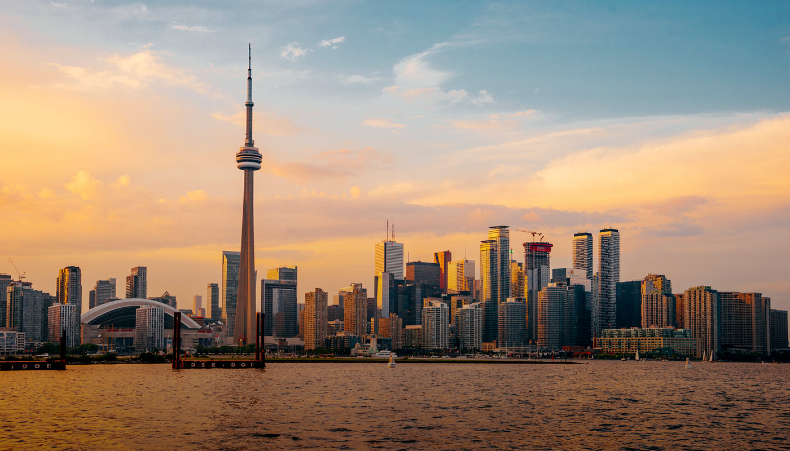

Toronto, capitale della provincia dell'Ontario, è una delle principali città canadesi situata lungo le rive del Lago Ontario. Metropoli dinamica, ha un nucleo di grattacieli svettanti su cui domina l'iconica CN Tower. La città è caratterizzata anche da numerosi spazi verdi, dall'ovale Queen's Park ai 400 acri di High Park, ricco di sentieri, impianti sportivi e zoo.